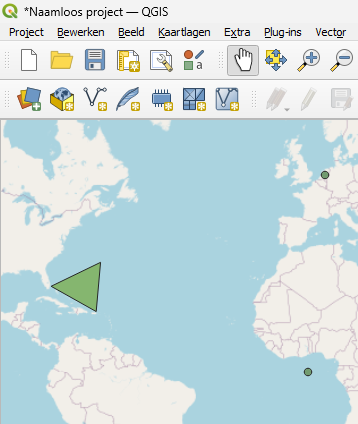
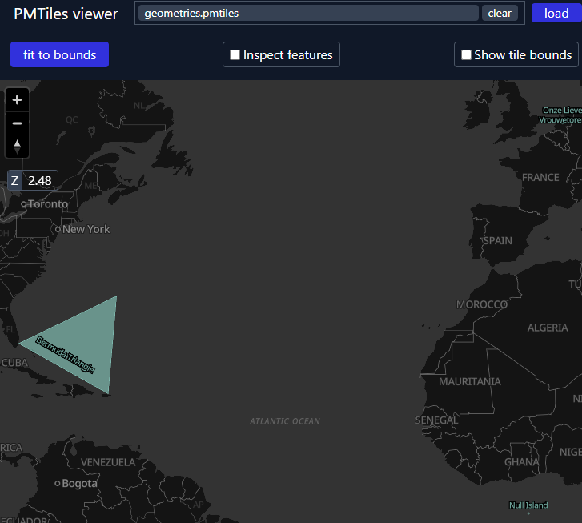

Export Delta Lake table to other formats with DuckDB
Setup
If install spatial fails (especially if you are not using the Free Edition or Serverless Compute, but classic compute), check whether HTTP is blocked on your (corporate) network. If so, then you need to work around it as described here.
Let’s first create an example table with GEOMETRY columns:
%sql
create or replace table tmp_geometries as
select
st_point(0, 0, 4326) as geometry,
"Null Island" as name
union all
select
st_transform(st_point(155000, 463000, 28992), 4326) as geometry,
"Onze Lieve Vrouwetoren" as name
union all
select
st_makepolygon(
st_makeline(
array(
st_point(- 80.1935973, 25.7741566, 4326),
st_point(- 64.7563086, 32.3040273, 4326),
st_point(- 66.1166669, 18.4653003, 4326),
st_point(- 80.1935973, 25.7741566, 4326)
)
)
) as geometry,
"Bermuda Triangle" as name;
select
* except (geometry),
st_asewkt(geometry) as ewkt_geometry
from
tmp_geometries
-- Returns:
-- ewkt_geometry name
-- SRID=4326;POINT(0 0) Null Island
-- SRID=4326;POINT(5.3872035084137675 52.15517230119224) Onze Lieve Vrouwetoren
-- SRID=4326;POLYGON((-80.1935973 25.7741566,-64.7563086 32.3040273,-66.1166669 18.4653003,-80.1935973 25.7741566)) Bermuda TriangleParquet files
We’ll use DuckDB Spatial to write he Geoparquet file, so first, we output the above Delta Lake table as a directory of Parquet files, using lon/lat coordinates.
(You could also use Databricks Temporary Table Credentials API to directly read the Delta Lake table with the DuckDB Delta Extension instead.)
We will use the above parquet export as a stepping stone to produce other formats below.
Geoparquet
We can use duckdb to transform the Parquet files into a valid Geoparquet files:
If you didn’t load the DuckDB Spatial extension, the below would still succeed but Geoparquet metadata would not be written.
There are more details around writing Geoparquet such as writing custom CRS’s or defining a “covering” using bounding boxes, but the above example is already a valid Geoparquet. For example, if your QGIS already supports the Parquet format (as of Aug 2025, the latest Windows version does but the latest macOS version doesn’t), then you can open this file in QGIS (after having downloaded from Volumes):

(in fact, the GDAL Parquet reader used by QGIS can even open parquet files that are not valid geoparquet, as long as they have a WKB or WKT column and the column name and CRS matches the expected defaults or correctly defined)
Thumbnail (sampled)
We can create a thumbnail (useful e.g. for STAC) as follows. This approach will only work for small datasets (as it’s loaded into memory), so for larger datasets, you’d need to write out a sampled Geoparquet first – or use another technique that is not sampled (see PMTiles below for an un-sampled visualization format).
%pip install geopandas pandas==$(pip show pandas | awk '/^Version:/ {print $2}') --quiet
import geopandas as gpd
import matplotlib.pyplot as plt
gdf = gpd.read_parquet(f"/Volumes/{CATALOG}/{SCHEMA}/{VOLUME}/geometries_geo.parquet")
fig, ax = plt.subplots(figsize=(4, 4))
gdf.plot(ax=ax, markersize=2)
plt.axis("off")Flatgeobuf
Exporting to Flatgeobuf is very similar to the above. Flatgeobuf as a format has two key advantages here: - It is faster to render (e.g. in QGIS) than Geoparquet, and - It can act as input to tippecanoe (see below), which we’ll use to produce PMTiles, which is even better suited for web mapping.
query = f"""
load spatial;
copy (
select
* replace (st_geomfromwkb({GEOMETRY_COLUMN}) as geometry)
from
read_parquet('/Volumes/{CATALOG}/{SCHEMA}/{VOLUME}/geometries.parquet/part-*.parquet')
) to '/Volumes/{CATALOG}/{SCHEMA}/{VOLUME}/geometries.fgb'
(FORMAT GDAL, DRIVER flatgeobuf, LAYER_CREATION_OPTIONS 'TEMPORARY_DIR=/tmp/')"""
duckdb.sql(query)If your table contains STRUCTs, the GDAL driver won’t like them. You’d need to drop them or move the the sub-fields up with the “.” operator, such as select * except (struct_col), struct_col.*.
Furthermore, the FlatGeobuf writer is overeager with BINARY/BLOB columns: if you have any BINARY/BLOB columns besides your chosen geometry column, they will be also parsed as WKB, possibly with unexpected geometry data types, which will cause issues downstream when trying to convert to PMTiles with tippecanoe. Long story short, additionaly BINARY/BLOB columns beyond your geometry column need to be filtered out as well.
Streaming the Flatgeobuf file to QGIS
You can stream this to QGIS (i.e. without downloading the file first – this is very useful for much larger datasets) via a token and the Files API. For example, after setting up a personal access token, you can stream the above file with a link like below:
Replace <YOUR_PERSONAL_ACCESS_TOPEN> in the output of the above with your token, and you can copy the resulting string (together with “/vsicurl” at the beginning, but without the quotes) to QGIS, inserting a vector layer.
This way of streaming might work with other formats too, such as Parquet; however, for larger datasets, Flatgeobuf is a great choice. And for smaller datasets, simply downloading the file might be faster than setting up the above authentication.
PMTiles
For PMTiles, while theoretically we could keep using DuckDB Spatial with GDAL, it did not succeed in our testing, so we’ll instead use tippecanoe.
The below make install runs in 3-4 min on high memory serverless.
import os
HOME = os.environ["HOME"]
# see https://github.com/felt/tippecanoe/blob/main/README.md#try-this-first and e.g.
# https://github.com/OvertureMaps/overture-tiles/blob/main/scripts/2024-07-22/places.sh
# for possible options
!{HOME}/.local/bin/tippecanoe -zg -rg -o /tmp/geometries.pmtiles --simplification=10 --drop-smallest-as-needed --drop-densest-as-needed --extend-zooms-if-still-dropping --maximum-tile-bytes=2500000 --progress-interval=10 -l geometries --force /Volumes/{CATALOG}/{SCHEMA}/{VOLUME}/geometries.fgb
# NOTE: this mv will emit an error related to updating metadata ("mv: preserving
# permissions for ‘[...]’: Operation not permitted"), this can be ignored.
!mv /tmp/geometries.pmtiles /Volumes/{CATALOG}/{SCHEMA}/{VOLUME}/geometries.pmtilesAlternatively, you can feed a directory of JSONL to tippecanoe (make sure you use the --read-parallel flag), such as:
(
spark.table('<TABLENAME>')
.selectExpr(
"'Feature' as type",
"parse_json('{}') as properties",
"parse_json(st_asgeojson(geometry)) as geometry",
)
.write.mode("overwrite")
.option("ignoreNullFields", "false")
.json("/Volumes/.../output.jsonl")
)and then read as:
Can come in handy if for some reason the Flatgeobuf export is not working.
(Yet another approach is to stream JSON with DuckDB Spatial to tippecanoe, as in here, but then tippecanoe cannot parallel read.)
To visualize, download the PMTiles from Volumes, and upload it to https://pmtiles.io/ (see below screenshot).

Or more elegantly, to directly visualize it via Databricks Apps instead of downloading, you can port pmtiles.io to open the .pmtiles files in Volumes via the Files API – see this app for a rudimentary example with App Authorization.
TO be clear: the advantage the PMTiles format is to be able to visualize very large datasets such as all of OpenStreetMap – this notebook only uses a very small example.
GeoPackage
Ah oldie but goodie! Similar to the FlatGeobuf DuckDB writes abov, but as the writer both needs random access and it doesn’t take an option similar to FlatGeobuf’s TEMPORARY_DIR, you need to first write to /tmp and then move to Volumes:
query = f"""
load spatial;
copy (
select
* replace (st_geomfromwkb({GEOMETRY_COLUMN}) as geometry)
from
read_parquet('/Volumes/{CATALOG}/{SCHEMA}/{VOLUME}/geometries.parquet/part-*.parquet')
) to '/tmp/geometries.gpkg'
(FORMAT GDAL, DRIVER GPKG)"""
duckdb.sql(query)
!mv "/tmp/geometries.gpkg" "/Volumes/{CATALOG}/{SCHEMA}/{VOLUME}/geometries.gpkg"The GPKG writer might not like all non-geo data types either, for example a varchar[] array would not be supported.